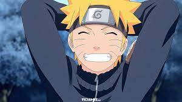
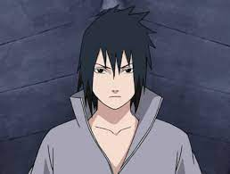
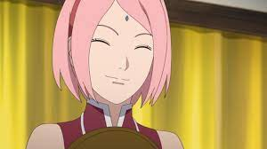
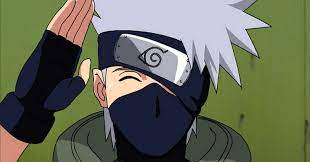
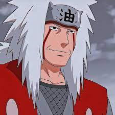
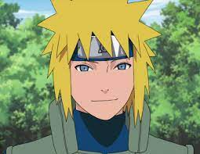
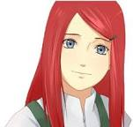

Oque é?
Naruto (ナルト?) é uma série de mangá escrita e ilustrada por Masashi Kishimoto, que conta a história de Naruto Uzumaki, um jovem ninja que constantemente procura por reconhecimento e sonha em se tornar Hokage, o ninja líder de sua vila. A história é dividida em duas partes, a primeira parte se passa nos anos da pré-adolescência de Naruto, e a segunda parte se passa em sua adolescência. A série é baseada em dois mangás one-shots de Kishimoto: Karakuri (1995), e que por causa dele Kishimoto ganhou uma menção honrosa no prêmio Hop Step da Shueisha no ano seguinte, e Naruto (1997). A editora Panini Comics licenciou e publicou o mangá em três versões no Brasil, e em Portugal é a editora Devir Manga quem licencia e publica o mangá. A história de Naruto continua com o seu filho, Boruto Uzumaki em Boruto: Naruto Next Generations. Os capítulos de Naruto foram publicados na revista Weekly Shōnen Jump de 1999 a 2014, com estes capítulos compilados e publicados em 72 volumes tankōbon pela editora Shueisha. O mangá foi adaptado para uma série de anime produzida pelo Studio Pierrot e Aniplex, que teve os seus 220 episódios transmitidos pela TV Tokyo no Japão de 2002 a 2007; a adaptação brasileira da série foi exibida na Cartoon Network e no SBT, e atualmente é exibido nos serviços de streaming Crunchyroll, Netflix e Claro Vídeo. Já a adaptação portuguesa da série foi exibida na SIC Radical, SIC, SIC K e no Animax Portugal. Naruto Shippuden, a sequência da série original, estreou no Japão em 2007 e terminou em 2017, após 500 episódios. A adaptação brasileira foi exibida na PlayTV de 2015 a 2017, na Loading entre 2020 e 2021, e atualmente é exibida nos serviços de streaming Crunchyroll, Netflix e Claro Vídeo. Além da série de anime, o Studio Pierrot desenvolveu onze filmes e vários OVAs. No Brasil, alguns filmes foram licenciados e exibidos dublados no país pela Viz Media. Outros produtos relacionados a Naruto como light novels, jogos eletrônicos, e cartas colecionáveis foram desenvolvidos por várias empresas. A partir de 2017, Naruto se tornou a terceira série de mangá mais vendida na história, vendendo mais de 220 milhões de cópias em todo o mundo, onde foi publicado em 35 países fora do Japão. Os críticos elogiaram o enredo, desenvolvimento de personagens, e as cenas de luta do mangá. Os críticos também observaram que o mangá, que tem uma história coming-of-age, faz uso de referências culturais da mitologia japonesa e do confucionismo.
Historia
A história principal se foca em Naruto e seu desenvolvimento quanto ninja, junto com os seus amigos. Também se centra nas interações entre estes e a influência do ambiente em suas personalidades. Conforme transcorre a série, Naruto se relaciona com Sasuke Uchiha e Sakura Haruno, com quem forma o “Time 7”, juntamente com o sensei Kakashi Hatake. Cabe mencionar que Naruto confia muito neles assim como em em outros personagens que irá conhecendo mais adiante. Enquanto eles aprendem novas habilidades e conhecem novas pessoas e lugares em suas missões, Naruto luta por seu sonho de se tornar o líder máximo de sua aldeia (Hokage) e ser reconhecido como alguém importante. No início, a série se enfoca nos integrantes do Time 7, Naruto, Sasuke e Sakura. Pouco depois, Orochimaru (um dos vilões mais procurados) ataca a Aldeia Oculta da Folha, assassinando o Terceiro Hokage em um ato de vingança pessoal. Isso acaba desencadeando que Jiraiya, um dos três ninjas legendários (Sannins), inicie a busca da sua antiga companheira de equipe Tsunade para designá-la como a Quinta Hokage. Durante a sua busca é revelado que Orochimaru quer encontrar Sasuke (a quem conhece por suas técnicas de dōjutsu) para oferecer-lhe o poder que tanto deseja para matar seu irmão Itachi Uchiha, responsável pelo assassinato de todo seu clã. Sasuke aceita a proposta de Orochimaru e vai treinar com ele, e por isso traindo a sua aldeia. Enquanto isso, Naruto decide fazer algo a respeito, e então resolve deixar a aldeia junto com Jiraiya durante dois anos e meio com o objetivo de treinar e preparar-se para a próxima vez que encontrar Sasuke, a quem tentará salvar.
Personagens Principais
-
Naruto Uzumaki
 -
Sasuke Uchiha
 -
Sakura Haruno
 -
Kakashi Hatake
 -
Jiraiya Hatake
 -
Tsunade Senju

-
Minato Namikaze
 -
Kushina Uzumaki
